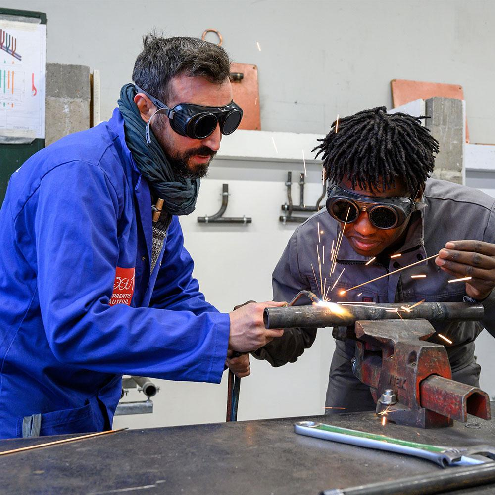
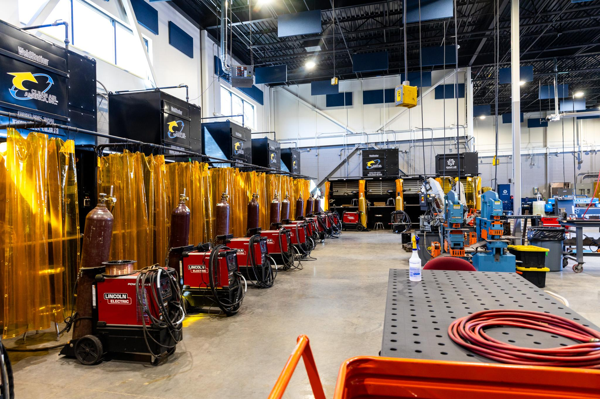
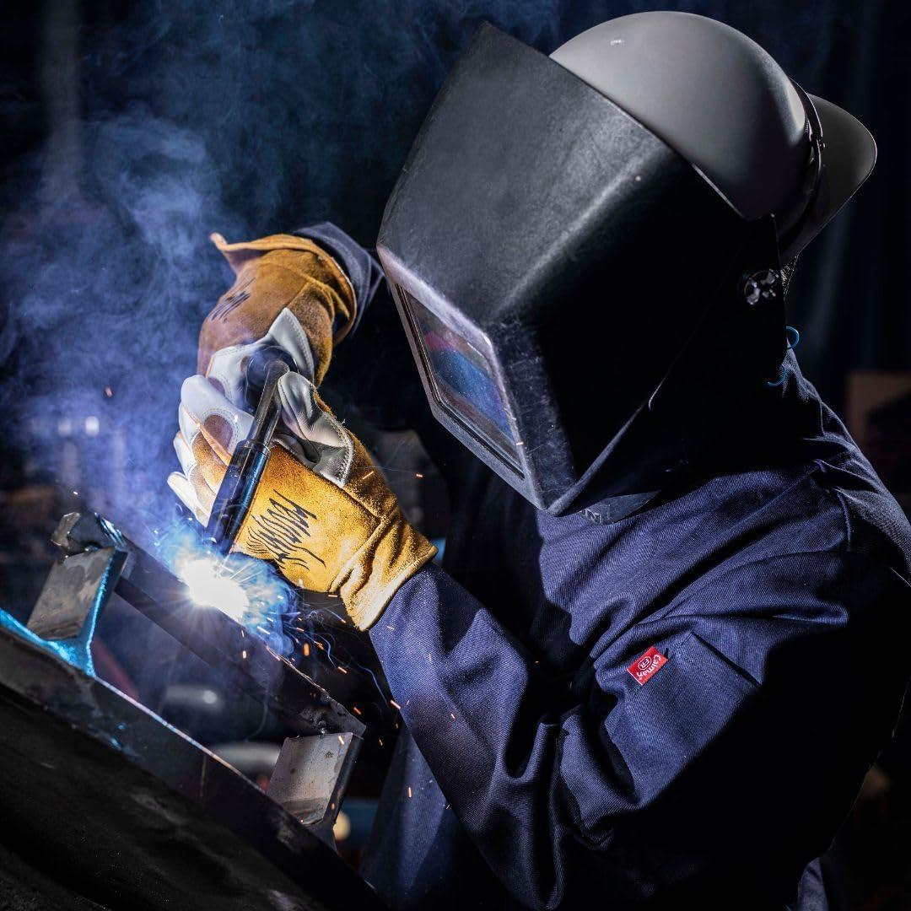
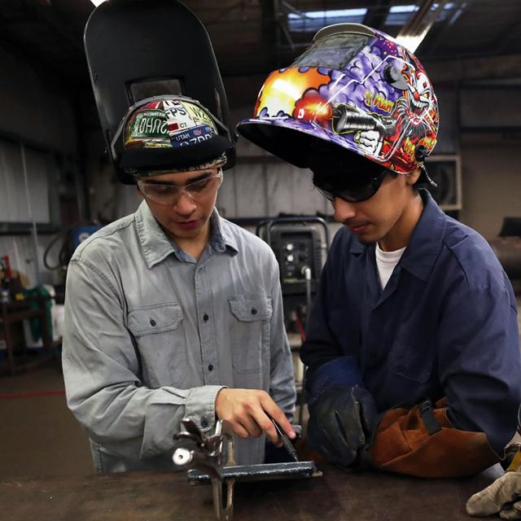

01
01
Welding Fundamentals
Learn welding basics, equipment handling, joint preparation, and essential safety practices.
Learn MoreDiscover practical welding programs designed to develop your technical skills, workshop confidence, and understanding of safe welding practices.
Discover practical training options designed to help you develop welding techniques, build confidence, and learn essential workshop safety practices.
01
Learn welding basics, equipment handling, joint preparation, and essential safety practices.
Learn More 02
02
 03
03
Develop precision welding skills through torch control, material preparation, and guided practice.
Learn More 04
04
Learn electrode handling, arc control, and practical welding joint techniques.
Learn MoreDevelop essential welding skills through guided practice, equipment training, and a strong understanding of workshop safety.
Understand fundamental welding processes and develop practical techniques workshop exercises.
Learn equipment setup, tool handling, and essential operating procedures for welding tasks.
Practice measuring, cleaning, aligning, and preparing metal pieces before welding learning.
Understand protective equipment, hazard awareness, and safe working practices in the workshop.
Our training approach combines essential welding knowledge with supervised workshop practice. Learn the fundamentals, develop practical skills, and build confidence through hands-on activities guided by experienced instructors.
Understand welding processes, materials, equipment, and essential workshop safety.
Develop your technique through supervised welding exercises and practical demonstrations.
Apply your knowledge to welding joints, fabrication exercises, and workshop tasks.
Receive instructor feedback, identify areas for improvement, and strengthen your skills.

Learn to work confidently with welding equipment, protective gear, and essential workshop safety practices. Build good habits through guided instruction and supervised practice.

Become familiar with welding machines, torches, electrodes, clamps, and commonly used workshop tools.
Understand the correct use of welding helmets, suitable gloves, protective clothing, and footwear.
Learn safe equipment handling, ventilation awareness, fire prevention, and supervised workshop procedures.
Build your welding knowledge step by step, from understanding the fundamentals to applying your skills in supervised workshop projects. Each stage helps prepare you for the next.
Understand welding principles, common materials, workshop tools, and essential safety practices.
Learn equipment setup, understand welding parameters, and practice techniques supervision.
Apply your developing skills to supervised welding joints, fabrication exercises, and workshop tasks.
Review your work, identify common weld defects, and improve your technique through instructor feedback.
Learning pace and course content may vary by program. Instructors guide students through appropriate practical activities and help them identify their next learning goals.
Whether you're starting from scratch, exploring a new career, or improving your existing workshop skills, our welding programs can help you work toward your learning goals.

Start with welding fundamentals, learn about equipment and materials, and develop safe working habits from the beginning.
START WITH THE BASICSExplore a practical trade, gain hands-on experience, and work toward new opportunities in welding and metal fabrication.
EXPLORE A NEW DIRECTIONStrengthen your existing knowledge, refine welding techniques, and improve your practical fabrication skills.
DEVELOP YOUR SKILLSTalk with our team to explore available programs, entry requirements, and the learning path that fits your experience and goals.
Find answers to common questions about our welding courses, practical training, equipment, safety, and enrollment. If you need more information, our team is here to help.

Many introductory welding programs are suitable for beginners. Check the entry requirements of your chosen course to confirm whether previous experience is necessary.
Available training may include MIG, TIG, Stick welding, and welding fundamentals. The techniques covered depend on the program you select.
Practical activities depend on the course structure. Ask our team about workshop hours, supervised exercises, and project opportunities for your chosen program.
Equipment arrangements vary by school and course. Contact our team before enrolling to confirm which tools and protective items are provided and which you must bring.
Welding training typically requires appropriate eye and face protection, gloves, protective clothing, suitable footwear, and other equipment specified by the instructor. Follow the school's safety requirements at all times.
Course duration varies by program, training level, and schedule. Contact us for the current duration and timetable of your preferred course.
Certificate availability depends on the program and the school's certification arrangements. Confirm the type of certificate and completion requirements before enrolling.
Visit our Contact page to ask about available courses, entry requirements, fees, and upcoming enrollment dates. Our team can guide you through the next steps.
Still have questions? Contact our team for more information.
Turn your interest into practical skills with hands-on welding training. Explore our programs and take the next step toward building your future in the welding industry.